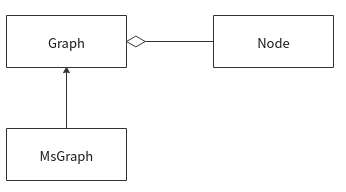
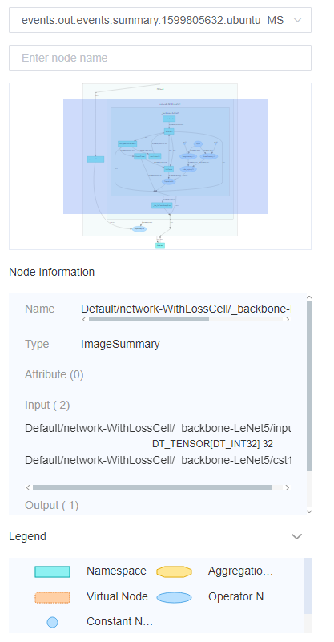

Computational Graph Visualization Design
Linux Ascend GPU CPU Model Development Model Optimization Framework Development Intermediate Expert Contributor

Background
The computational graph visualization function is mainly used in the following scenarios:
View a data flow direction of operators and a model structure when programming a deep learning neural network.
View the input and output nodes of a specified node and attributes of a queried node.
Trace data, including data dimension and type changes when debugging a network.
Overall Design
Concept Design
Concept |
Description |
|---|---|
Root node, parent node, and subnode |
Nodes are divided into different layers based on slashes in the operator name. Take node A |
Scope |
Each node has a scope. A scope of a subnode is the name of its parent node. For example, the scope of an operator node A |
Operator node |
Node type. An original node is parsed from the file that stores a computational graph. It corresponds to an operation operator in the neural network code, for example, an |
Const node |
Node type, indicating the constant input of an operator. Constant is parsed from the file that stores a computational graph. The scope is determined based on the input of other nodes. For example, if constant A |
Parameter node |
Node type, indicating the parameter input of an operator. |
Name scope |
Node type obtained based on the slash (/) in the operator node name, which is also a scope type. Take node A |
Aggregation node |
Node type, which is also a scope type. In the same scope, if there are too many nodes of the same type, an aggregation node is created to replace these nodes. These nodes are folded as subnodes of the aggregation node. |
Proxy node |
Node type. If the connection line between node A and node B is too complicated, a node C that can represent node B is created next to node A. A connection line between node A and node C is created, indicating that the data flows from node A to node B. In this way, the connection lines in a graph are optimized, preventing the layout from being disordered. |
Data edge |
Connection type, indicating the data flow direction using a solid line and an arrow. For example, A->B indicates that data flows from A to B. |
Control edge |
Connection type, indicating the dependency between operator nodes using a dashed line and an arrow. For example, A–>B indicates that A is executed before B. |
Independent layout |
In complex connection scenarios, a node is removed from the original connection so that other nodes cannot connect to it. Instead, proxy nodes are created on other nodes for connection, simplifying the connection relationship. For example, nodes of the parameter type are aggregated, which simplifies a connection relationship between the parameter node and other nodes. |
Backend Design
The following figure shows a class diagram of a backend, which consists of the base class Graph and the class Node. MsGraph inherits the Graph base class and is used to parse the computational graph file of MindSpore ANF. Node classes are aggregated into a graph, which has an aggregation relationship with the Graph.

Frontend Design
The data is drawn and displayed on the WebUI. The frontend uses the d3-graph-viz 3.x plug-in to assist in drawing.

Figure 1 Auxiliary functions
As shown in Figure 1, auxiliary functions such as selecting files, querying nodes, viewing node information, and node input and output are provided.

Figure 2 Main part of the computational graph
In the computational graph, nodes are divided into layers based on slashes (/) in names and are displayed layer by layer. For details, see Figure 2. When you double-click a scope node, its subnodes are displayed.
API Design
In the computational graph, there are file API and RESTful API. The file API is the summary.proto file, which is used for data interconnection between MindInsight and MindSpore.
RESTful API is used for data interaction between the MindInsight frontend and backend.
File API Design
Data interaction between MindSpore and MindInsight uses the data format defined by Protocol Buffer.
The main entry is the summary.proto file. A message object of a computational graph is defined as GraphProto. For details about GraphProto, see the anf_ir.proto file.